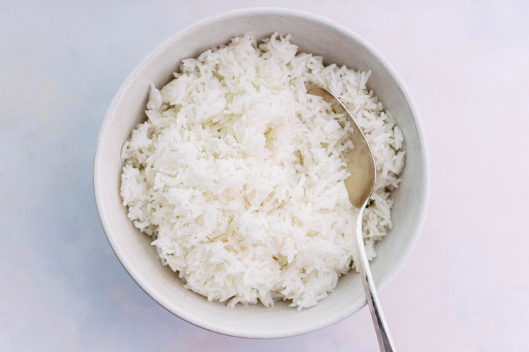

Rice

White rice made easy
For this demo, we'll use long-grain white rice. This type of rice is highly refined and polished, and doesn't require washing before cooking, although it's a good idea to rinse away dust and other impurities by measuring the rice into a strainer and running cold water over it for a few moments. Recipes using other types of rice, such as basmati, sometimes call for soaking or rinsing the rice before cooking to remove extra starch.
Ingredients
- 2 cups water
- 1 cup rice
- 1 pinch salt
Steps
- To cook long-grained white rice on the stove, use a 2 to 1 water to rice ratio. Bring 2 cups of water to a boil in a small saucepan with a tight-fitting lid. You can add an optional pinch of salt if you wish. Add 1 cup of rice, stir briefly to break up clumps of rice, cover the pot with the lid, and reduce the heat to its lowest setting to help the rice cook evenly. If the temperature is too high, the bottom of the pan of rice can scorch while the rice at the top is still undercooked.
- Set a timer for 20 minutes. A little steam will escape the covered pot while the rice cooks–this is normal. Resist the temptation to lift the lid and peek before the timer runs out, otherwise too much moisture will escape and your rice will be too dry.
- When the timer rings, turn off the burner and remove the pan from the heat. Let the rice sit, covered, for an additional five minutes. No peeking! Let the steam finish doing its work to plump and cook the rice.
- After five minutes, remove the lid and fluff the rice with a fork to separate the grains.